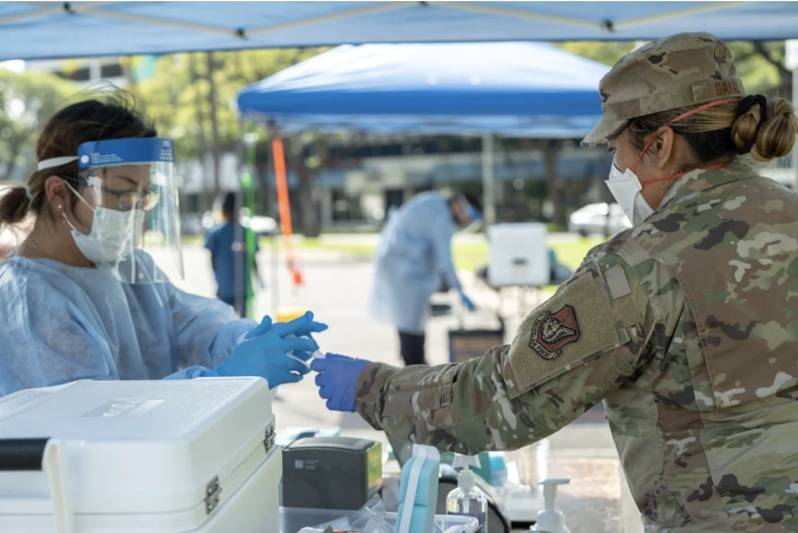
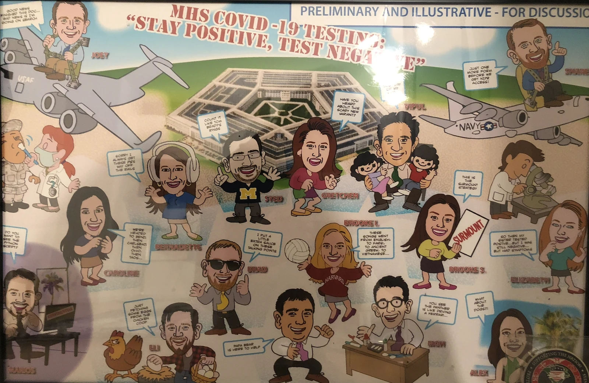
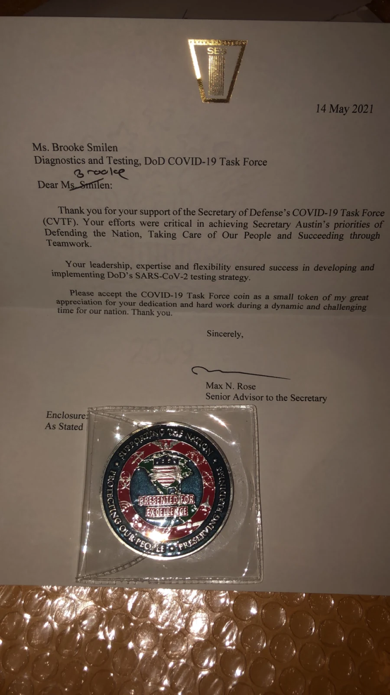

Robinhood
Helping the Department of Defense rapidly respond to COVID-19 with a new central tool to track, manage, and deploy diagnostic testing globally.
2020-2021
Overview
During the height of the COVID-19 pandemic in 2020, I served the Department of Defense on a rapid supply chain response effort at McKinsey & Company. We were brought on with one mandate: Help deliver diagnostic testing to the entire DoD population of ~3 million global active duty members, reservists, and civilians through the height of the pandemic. I was responsible for forecasting test kit demand to help our client procure and allocate its test supply. Because the pandemic required rapid decision-making, I turned this work into a central analytic tool.
Challenge
We faced several significant challenges upfront - in fact, at week 4, we almost shut down the project.
The data.
The biggest challenge I heard - from the three-star to the logistics managers - was a lack of data visibility. Our clients were underwater, inundated with requests for more tests globally. But they didn't have visibility into supply and demand.
The methods.
In Q3 2020, the world was just learning what COVID-19 was. Advanced epidemiology modeling was being developed, but it was difficult to use reliably. Predicting "demand for diagnostic tests" was uncharted territory.
The infection rates.
Our clients felt time-pressure. At the time, global DoD infection rates were often higher than the general population due to close-quarter living.
Solution
We built Robinhood, a test kit demand and supply tracking tool for the DoD to centrally manage its end-to-end COVID-19 diagnostic test supply chain - covering supply, equipment capacity, test demand, burn rates, and resupply rate by location. We deployed Robinhood onto DoD systems, and the tool managed tests for 133 DoD locations worldwide, enabled the DoD to distribute 67,000 tests in a week at peak volume, and helped the DoD reach a 10% testing rate every 14 days - higher than the national average. Our team became a core partner to the DoD, converted them into a full-time client, and worked with them for the next year to navigate the pandemic.
Our COVID-19 response effort felt like an all-in battleground during a time of global uncertainty. The full team is in touch today, and we wrapped up the effort with a few keepsakes!
Here's how we did it
Our team had two major workstreams - demand & supply modeling, and medical guidance on test types, vendors, and population monitoring. I led the former, and this overview will focus on that.
User research
Conducted 15+ interviews with DoD logistics leads and lab clinicians. Discovered we could combine weekly lab equipment reporting with test consumption data to predict supply and demand.
Development
Built wireframes and model logic, mapped user workflows, and developed the forecasting algorithms in Python.
Deployment & User training
Built the UI with our data engineers (React + Tailwind) and deployed Robinhood onto DoD systems for 133 locations worldwide.
Demo
Live demonstration of Robinhood managing test supply and demand across 133 DoD locations


